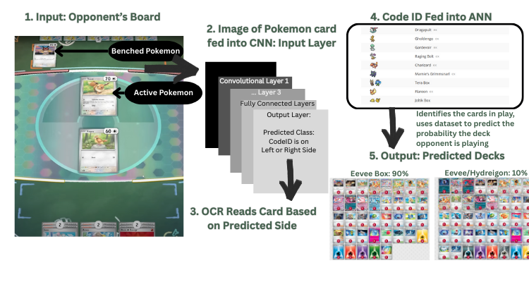
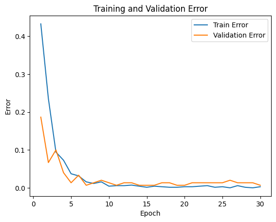
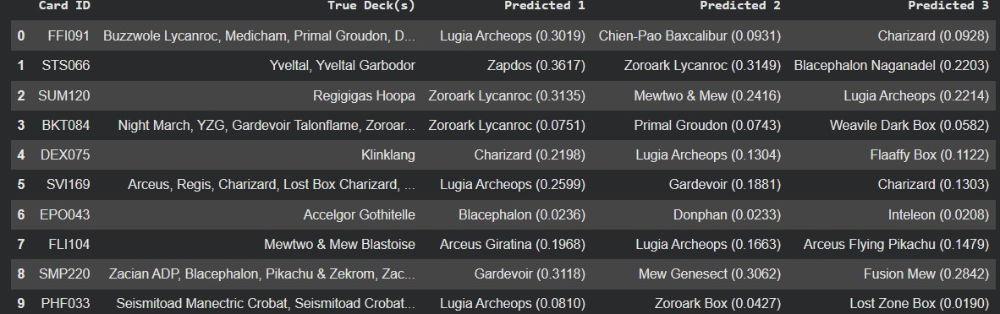

Pokémon TCG Deck Predictor
Deep Learning · Computer Vision · Machine Learning · Python
Project Overview
A machine learning system that predicts an opponent’s most likely Pokémon TCG deck
archetype using only an image of their starting board (Active + Bench).

System Pipeline
- Input image of opponent’s starting board
- CNN detects Pokémon card ID location
- Image is cropped
- OCR extracts the card ID
- ANN predicts deck archetype probabilities
Data Collection & Processing
Card images were collected from the Pokémon TCG API and paired with tournament
decklists from Limitless TCG (2011–2023).
Model Architecture
Convolutional Neural Network (CNN)
- LargeNet architecture
- 3 convolutional layers (32 / 64 / 128 filters)
- ReLU activation and max pooling
- Binary classification: ID location
Artificial Neural Network (ANN)
- 128-dim card embedding
- 256-unit hidden layer
- Sigmoid multi-label output
Training Results
- Training Accuracy: 96.61%
- Validation Accuracy: 97.6%

Qualitative ANN Results
The ANN accurately predicts the most successful deck archetypes for unseen cards,
except when cards have no tournament presence.

Challenges & Limitations
OCR performance was the primary bottleneck, frequently misreading card IDs and
preventing a fully reliable end-to-end pipeline.
Ethical Considerations
This tool is intended for learning and practice. Users should be aware that
predictive tools may provide competitive advantages.
Tools & Technologies
- Python
- PyTorch / TensorFlow
- OpenCV
- Pokémon TCG API
- Limitless TCG Dataset
- Google Colab
Links
GitHub
Colab